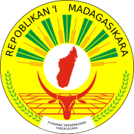

Madagascar
To know:
.jpg)
Motto in Malagasy: Fitiavana, Tanindrazana, Fandrosoana ("Love, Fatherland, Progress")
Capital: Antananarivo
Form of the State Republic: with a semi-presidential and unitary regime
President: Andry Rajoelina
Anthem in Malagasy: Ry Tanindrazanay malala ô ("Oh, our dear homeland")
Madagascar (Malagasy: Madagasikara), in the long form Republic of Madagascar, is an island state located in the Indian Ocean and geographically attached to the African continent, from which it is separated by the Mozambique Channel. Madagascar covers an area of 587,000 km2 which ranks it as the fourth largest island in the world, after Greenland, New Guinea and Borneo. Its inhabitants, the Malagasy, are a people combining a mixture of populations of Austronesian and East African origins, but speaking a Malayo-Polynesian language: Malagasy.
Culture
Music
The most emblematic musical instrument of Madagascar, the valiha. is a bamboo tube zither carried to the island by early settlers from southern Borneo, and is very similar in form to those found in Indonesia and the Philippines today.
Religion

Majority of the Malagasy population adheres to Christianity, with practitioners of Protestantism slightly outnumbering adherents to Roman Catholicism.4.6% of the Island's population is solely adherent to the traditional religion of Fomba-gasy, which tends to emphasize links between the living and the razana (ancestors). The veneration of ancestors has led to the widespread tradition of tomb building, as well as the highlands practice of the famadihana, whereby a deceased family member's remains may be exhumed to be periodically re-wrapped in fresh silk shrouds before being replaced in the tomb. The famadihana is an occasion to celebrate the beloved ancestor's memory, reunite with family and community, and enjoy a festive atmosphere.
Best Film Made in Madagascar
.jpg)